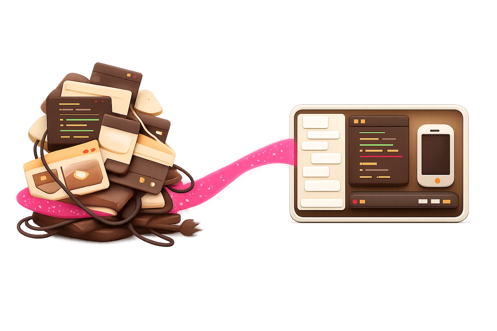
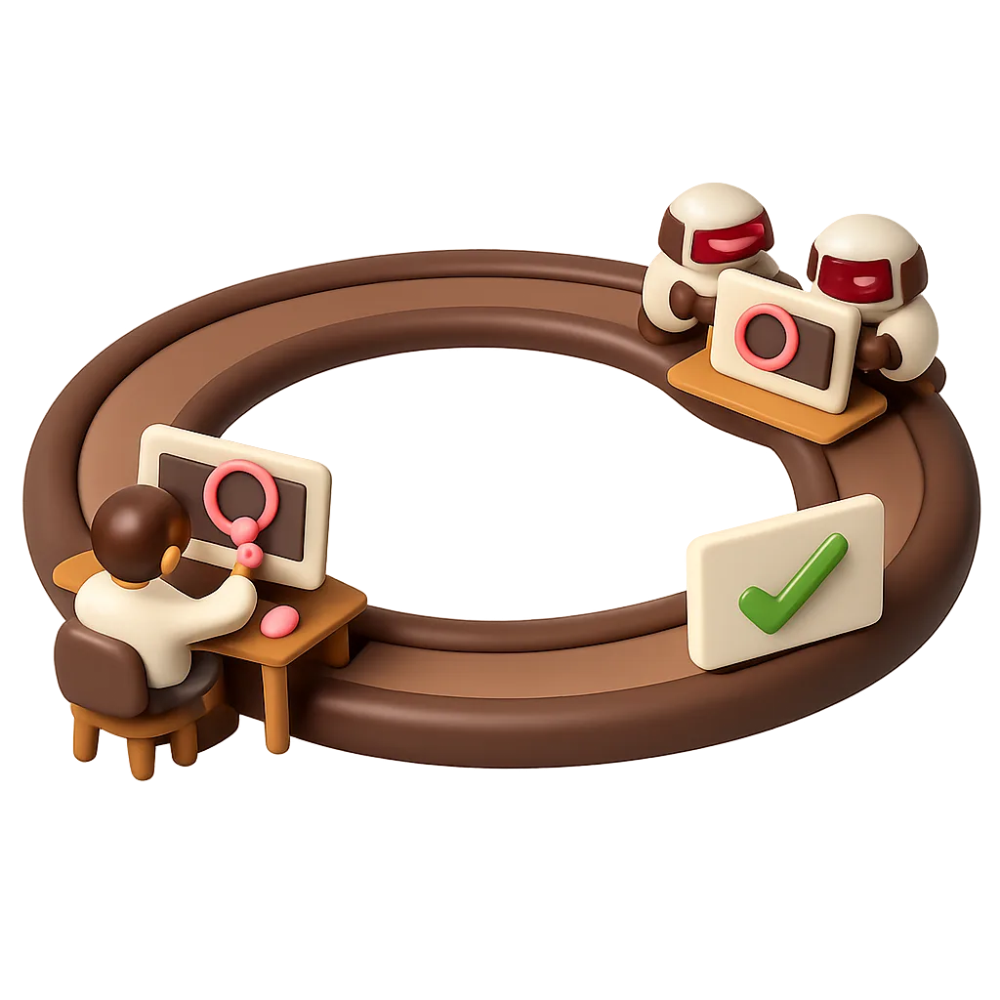
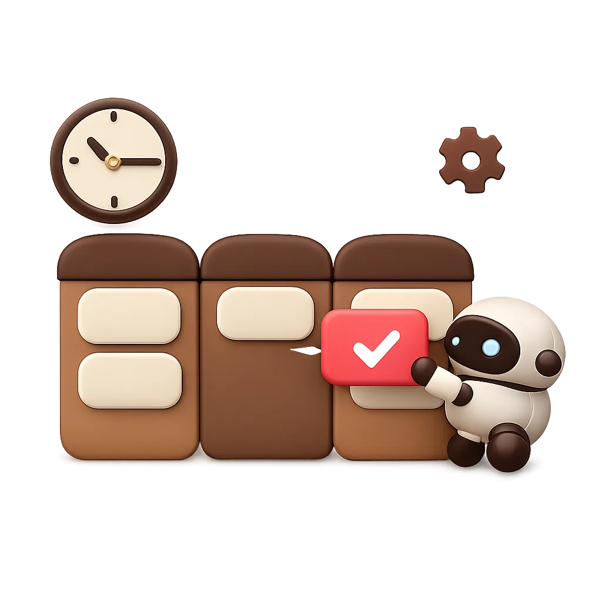

Workspaces
Any number of folders and repositories, each with its chats, colour and status. Move one to a window of its own.
Version 0.3.1 · Free and open source
One fast, native app where Claude Code, Codex, Gemini CLI and Antigravity work beside your code, Git, terminals, a browser and Android devices. You steer from one window; the agents see what you see.

Why native
A day with coding agents usually means an editor, Android Studio and an emulator, a browser to check the result, a Git client and a row of terminals, each a big app of its own, many built on Electron or the JVM. Your machine spends its memory on the tools instead of the work, and you spend your attention moving between them.
PilotHouse is written in Rust and drawn by the GPU. There is no Electron and no bundled browser engine: one native process holds every workspace, its agents, its shells and its test runs, and it stays quick with all of them going.
@ away

Steering, not babysitting
The hard part of working with agents is the back and forth: showing them the problem, checking the result, saying what to change. PilotHouse puts both ends of that loop in one place.
@ a file, a definition, a screenshot, a log, a pull request or a test run, and the agent gets it whole.Everything in one place
Every tool you would open next to an agent is already here, and the agents can use it too.
Any number of folders and repositories, each with its chats, colour and status. Move one to a window of its own.
The Agent Client Protocol with tool calls, diffs, plans, a model picker with effort and mode, usage and search across chats.
A file tree with Git marks and a full right-click menu, an editor with language servers, search, and a viewer for huge logs.
Markdown with Mermaid, JSON trees, CSV, PDF, video, audio, SQLite, spreadsheets, archives and fonts, plus Notion-like Markdown editing.
Commit, branches, a history graph, stashes, conflicts and blame; pull requests in the app and agent reviews you post as comments.
A Kanban board agents plan on and work through card by card, with UI tests that must pass before a card is done.
A browser pane and Android emulators or phones that you and the agents can see and drive, without opening Android Studio.
Recorded from what an agent does, replayed without AI on several screens, compared with accepted shots, repaired by an agent.
Prompts and test runs at set times, or when files change, a commit lands, a pull request opens or checks fail.
Code on a server's share? Git, terminals and run configurations work on the server over SSH, next to the files.
Shells per workspace, detected run configurations, and agents in terminals that keep going while you look elsewhere.
An offline toolbox for JSON, JWT, hashes, times, cron, regex and SQLite, for you and for the agents.
New in 0.3.1
Agents write more than code: plans in Markdown, diagrams, data, screenshots, recordings. PilotHouse shows each as itself, drawn by the app, with nothing to install.
Markdown edits like a document: slash commands, to-dos you tick, blocks you drag, images you paste. The file underneath stays plain Markdown, changed only where you typed.
Browser and Android
Run the web app in the browser pane, or the Android app on an emulator or a phone, right beside the chat. The agent can look, tap and type there too. Circle what's wrong and send the marked-up screen; there's no IDE to open just to see your app run.

Plans and automation
Agents plan on the board and take cards one at a time, through PilotHouse's own MCP server. A card can wait on its UI tests before it's done. Schedule prompts and test runs, or start them when a commit lands or checks fail.
Private by design
PilotHouse has no account, no backend and no telemetry. It talks to the agents you installed, to Git, and to the hosts you add yourself. Opening a project never runs its code, and viewing a file never runs it either.
Download
Free for every system. Install the agent CLIs you want to use and sign in to them; PilotHouse shows what is missing for each.
Every build is on the releases page, with SHA-256 checksums. The builds are not code-signed yet: on macOS, choose Open Anyway in System Settings → Privacy & Security; on Windows, More info → Run anyway.
Or build it yourself
git clone https://github.com/LibreGuild/PilotHouse.git
cd PilotHouse
cargo run --release -p pilothouse